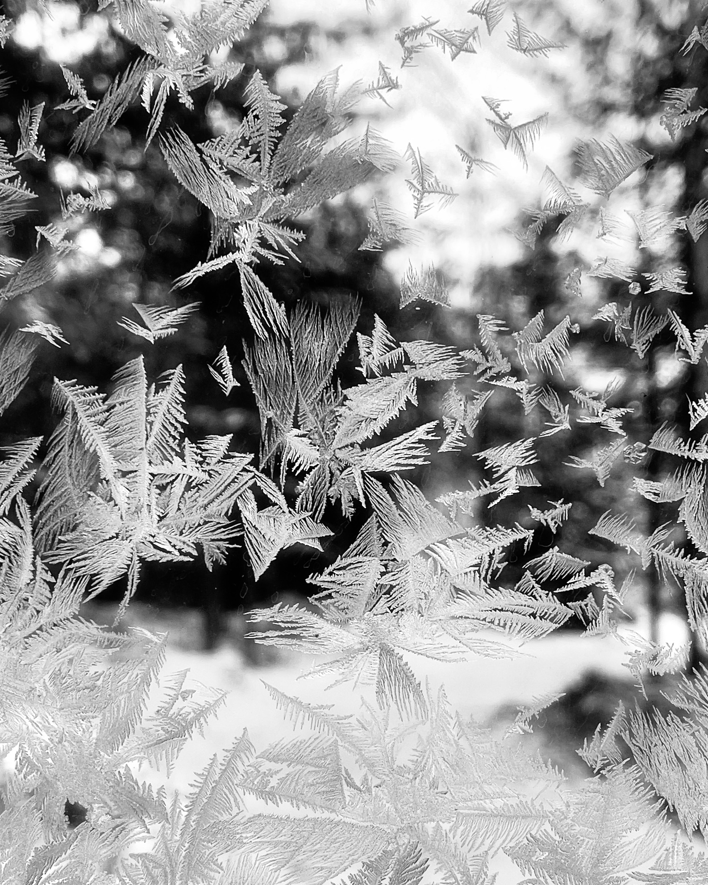

Title: "A Temporary Surface"
These photographs were made through a window in winter.
The frost forms briefly, then disappears. What remains is not the landscape itself, but a fragile surface between inside and outside — a place where light, temperature, and time meet.
The images do not describe winter. They register it.
The work is attentive to small variations: density and openness, sharpness and dissolution. Nothing is staged. Nothing is repeated exactly.
What is seen is temporary. The act of looking is what holds it.
Between the Surface explores moments where vision is interrupted — where frost, condensation, and distance soften what we believe we see.
The images are not documents of landscape, but of perception itself: a quiet negotiation between surface and depth, clarity and obscurity.
These photographs were made while moving forward through a winter storm.
Snow and light overwhelm orientation, reducing the road to a narrow condition rather than a destination.
The work is not about landscape, but about persistence — continuing without clarity, guided only by momentum and necessity.
These photographs were made while moving slowly along a single architectural site.
Rather than documenting the structure, the work observes how space is divided, guided, and constrained — by walls, railings, shadows, and ground.
The series reflects on quiet boundaries: where movement is directed, where vision is limited, and where form quietly shapes experience.